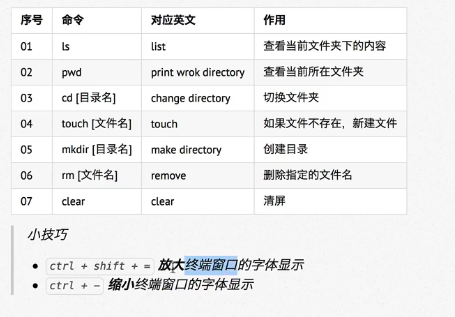

终端命令格式
command [-options] [parameter]
command:命令名，相应功能的英文单词或单词的缩写
[-options]:选项，可用来对命令进行控制，也可以省略
parameter:传给命令的参数，可以是零个、一个、多个
[] : 代表可选
查询命令帮助信息
command --help 显示command命令的帮助信息
man command 查询command命令的使用手册
文件和目录命令
cp:拷贝
mv:移动
查看文件内容：cat、more、grep
其它：echo
重定向 > 和 >>
管道
以 . 开头的文件为隐藏文件，需要用-a参数才能显示 ls -a
. 代表当前目录
..代表上一级目录
目录相关命令
ls常用选项
-a：显示指定目录下所有子目录与文件，包括隐藏文件
-l：以列表方式显示文件的详细信息
-h：配合-l以人性化的方式显示文件大小 ls -lha
ls通配符的使用
*：代表任意个数个字符 ls 1* ; ls *1.txt
？：代表任意一个字符，至少一个 ls 1?1.txt
[]：表示可以匹配字符数组中的任意一个 ls [12345]23.txt ; ls [1-3]23.txt
[abc]：匹配a、b、c中的任意一个
[a-f]：匹配从b到f范围内的任意一个字符
切换目录